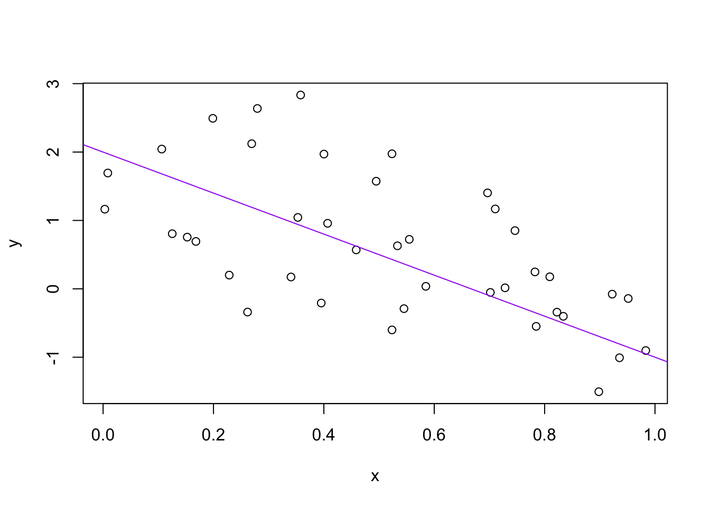

2 Basics of R (Part 1)
We will begin our adventure by opening RStudio. If this is your first time opening RStudio, you should see the following panes:
- Console (entire left)
- Environment/History (upper right)
- Files/Plots/Packages/Help (lower right)
You can change the default location of the panes, among many other things: Customizing RStudio.
For now, place your cursor in the console so we can start coding with R!
2.1 Objects
Here’s some basic information to get you started.
- R is an object-oriented programming language (OOP). This means that R creates different types of objects that we can manipulate with functions and operators.
- Our first operator will be the assignment operator; either
<-(a left arrow) or=(the equal sign).
Let’s make our first assignment and inspect the object we’ve just created:
## [1] 50In plain English, the above snippet tells us that “five times ten is assigned to my_object”.
Every value you assign to an object will be in this form:
By convention, we use <- to assign variables. Don’t be lazy and use = to assign variables. Although it works, it will just sow confusion later. Instead, utilize RStudio’s keyboard shortcut: Alt+- (the minus sign). Notice that RStudio automagically surrounds <- with spaces, which demonstrates a useful code formatting practice. Code is miserable to read on a good day. Give your eyes a break and use spaces.
RStudio offers many handy keyboard shortcuts. The shortcut to rule them all is Alt+Shift+K (this brings up a keyboard shortcut reference card).
Although object names are flexible, we need to follow some rules:
- Object names cannot start with a digit and cannot contain certain other characters such as a comma or a space.
- As a general rule of thumb, object names should be short and meaningful. Misleading or overly long object names will make it a pain to debug your code.
Below are examples of various object name conventions. My best advice would be to pick one and stick with it.
this_is_snake_case
other.people.use.periods
evenOthersUseCamelCaseLet’s make another assignment:
To inspect the object we’ve just created, try out RStudio’s auto-complete feature: type the first few characters, press TAB, add characters until you get what you want, then press return/enter.
2.2 Function Basics
Functions are always followed by a pair of brackets (). R has a huge collection of built-in functions that can be accessed like this:
Notice that we use = instead of <- within a function. Here, arg1 and arg2 are called the arguments of the function functionName(). Likewise, val1 and val2 are called the parameters of arg1 and arg2.
Let’s try using seq() which makes regular sequences of numbers and, while we’re at it, demo more helpful features of RStudio.
Type se and hit TAB. A pop up shows you possible completions. Select seq() by using the up/down arrows to select. Notice the floating tool-tip-type help that pops up to remind you of a function’s arguments.
If you want even more help, press F1 to get the full documentation in the help tab of the lower right pane. Now open the parentheses and notice the automatic addition of the closing parenthesis and the placement of cursor in the middle. Type the arguments 1, 10 and hit return/enter. RStudio also exits the parenthetical expression for you.
## [1] 1 2 3 4 5 6 7 8 9 10The above snippet also demonstrates something about how R resolves function arguments. You can always specify name = value if you’re unsure. If you don’t, R attempts to resolve by position. In the above snippet, R assumed we wanted a sequence from = 1 that goes to = 10.
Since we didn’t specify step size specified by the by argument, R uses the default value of 1 in this case. For functions I call often, I might use this resolve by position for the first argument or maybe the first two. After that, I always specify name = value.
## [1] 1 3 5 7 9If you just make an assignment, you don’t see the assigned value. To show the assigned value, just call the variable.
## [1] 1 2 3 4 5 6 7 8 9 10You can shorten this common action by surrounding the assignment with parentheses.
## [1] 1 2 3 4 5 6 7 8 9 10Not all functions have (or require) arguments:
## [1] "Fri Jan 1 16:14:06 2021"Now look at your workspace – in the upper right pane. The workspace is where user-defined objects accumulate. You can also get a listing of these objects with commands:
## [1] "my_object" "this_is_a_really_long_name"
## [3] "y"## [1] "my_object" "this_is_a_really_long_name"
## [3] "y"If you want to remove the object named y, you can do this:
To remove everything:
or click the broom icon in RStudio’s Environment pane.
2.3 Basic math operators
Here are some basic math operations you can perform in R (no need to memorize this list!):
2.4 Conditionals
Conditional statements checks if some condition is true or false using logical operators (operators that return either TRUE or FALSE). For example:
## [1] TRUE## [1] FALSEThese statements return a value is of type "logical", which is either TRUE(shorthand: T) if the condition is satisfied, or FALSE (shorthand: F) if the condition is not satisfied. One important note is that TRUE and FALSE are objects on their own, rather than the strings “true” and “false”.
Conditional statements are made with a range of logical operators. So far, We’ve seen:
| Operator | Plain English |
|---|---|
== |
is equal to |
!= |
is not equal to |
< or > |
is less than OR is greater than |
<= or >= |
is less than or equal to OR is greater than or equal to |
is.na() |
is an NA value |
There are other logical operators, including %in%, which checks if a value is present in a vector of possible values. Type the following statements into the console to see their output.
"aang" == "aang"
"aang" != "kora"
10 < 5
10 >= 5
is.na("toph")
is.na(NA)
"zuko" %in% c("aang", "toph", "katara")We can also combine conditions using the logical and (&) along with the logical or (|). The logical & returns TRUE if and only if both conditions are true, and it returns FALSE otherwise. Below is a truth table (don’t worry about memorizing it):
| P | Q | P & Q | P |
|---|---|---|---|
| True | True | True | True |
| True | False | False | True |
| False | True | False | True |
| False | False | False | False |
To contexualize this table, let’s look at the following examples:
## [1] FALSE## [1] TRUEWe can also use logical operators on vectors. In the next example,we compare a vector to a single value, and operator returns one logical per value.
## [1] TRUE TRUE FALSE FALSE TRUEIn English, the above snippet checks if each value in the vector is equal to 1. This is essentially what goes on behind the scenes when we try to subset a vector, except subsetting only returns where the subset condition is TRUE.
Let’s look at an example where we have a vector of sites and a vector of US states they occur in.
Now, let’s check if the state is 'FL'. This should return a vector of TRUE and FALSE.
## [1] TRUE TRUE FALSE FALSENow, let’s filter the site vector to return values where the state is equal to 'FL'.
## [1] "a" "b"The above snippet is the equivalent to passing a vector of TRUE and FALSE values inside the square brackets:
## [1] "a" "b"2.4.1 If statements
Conditional statements generate logical values to filter inputs. if statements use conditional statements to control flow of a program. Below is the general form of an if statement:
Let’s look at an example:
## [1] 36x > 5isTRUE, so the code in theifrunsxis now 6^2 or 36- Change
xto 4
## [1] 4x > 5isFALSE, so the code in theifdoesn’t runxis still 4- This is not a function, so everything that happens in the if statement influences the global environment
Here’s a slightly more applied example:
## [1] 32.27775- We often want to chose one of several options.
- We can add more conditions and associated actions with
else if
veg_type <- "grass"
volume <- 16.08
if (veg_type == "tree") {
mass <- 2.65 * volume^0.9
} else if (veg_type == "grass") {
mass <- 0.65 * volume^1.2
}
mass## [1] 18.21615Here, our script:
1. Checks the first condition
2. If TRUE runs that condition’s code and skips the rest
3. If not it checks the next one until it runs out of conditions
We can specify what to do if none of the conditions are TRUE by using else on its own
veg_type <- "shrub"
volume <- 16.08
if (veg_type == "tree") {
mass <- 2.65 * volume^0.9
} else if (veg_type == "grass") {
mass <- 0.65 * volume^1.2
} else {
mass <- NA
}
mass## [1] NA2.4.2 Multiple “if”s vs “else if”
Multiple ifs check each conditional separately, which is very inefficient. That is, R executes code for all conditions that are TRUE.
## [1] 10## [1] 20else if checks each condition sequentially, and ONLY executes code for the first condition that is TRUE
## [1] 102.5 Working directory
Any process running on your computer has a notion of its “working directory”. By default in R, a working directory is where R will look for files you ask it to load. It is also where any files you write to disk will go. You can explicitly check your working directory with:
The working directory is also displayed at the top of the RStudio console. Notice that getwd() looks a lot like “get working directory”.
As a beginning R user, it’s OK let your home directory or any other weird directory on your computer be R’s working directory. Very soon, I urge you to evolve to the next level, where you organize your analytical projects into directories and, when working on project A, set R’s working directory to the associated directory.
In case you’re curious, you can set R’s working directory at the command line like so:
The setwd() function is extremely useful for times you want to read in external data, such as a .csv file. Like getwd(), notice that setwd() looks a lot like “set working directory”.
Now, let’s start a mini-project!
a <- 2
b <- -3
sig_sq <- 0.5
x <- runif(40)
y <- a + b*x + rnorm(40, sd = sqrt(sig_sq))
(avg_x <- mean(x))## [1] 0.5145284
Don’t worry if your graph doesn’t look exactly like the provided output—rnorm() generates random numbers (from a normal distribution).
Imagine that our mini-project is the start of an analysis, and you’re ready to preserve the logic and code. Here’s what I want you to do:
- Visit the History tab of the upper right pane and select the commands we just made.
- Click “To Source”. Now you have a new pane containing a new R script.
- Click on the floppy disk to save. Give it a name ending in
.Ror.r. Note that, by default, it will go in the directory associated with your project. - Quit RStudio and restart RStudio.
Notice that things, by default, restore to where we were earlier (e.g. objects in the workspace, the command history, which files are open for editing, where we are in the file system browser, the working directory for the R process, etc.).
Here is an exercise for you:
- Set a sample size
nat the top (e.g.n <- 40), and replace all the hard-coded 40’s withn. - Change some other minor-but-detectable stuff. For example, alter the sample size
n, the slope of the lineb, the color of the linem … whatever.
Practice the different ways to re-run the code:
- Walk through line by line by keyboard shortcut (
Command+Enter) or mouse (click “Run” in the upper right corner of editor pane). - Source the entire document—equivalent to entering
source('toy-line.r')in the console—using the keyboard shortcut (Command+Shift+S) or mouse (click “Source” in the upper right corner of editor pane or select from the mini-menu accessible from the associated down triangle).
One day you’ll want to recreate a figure or just simply understand where it came from. If you religously save figures to a file with R code and not ever ever ever the mouse or the clipboard, you will sing my praises one day. Trust me.
2.5.1 Other important things
Below is a collection of important miscellaneous items to consider.
- R scripts are usually saved with a
.Ror.rsuffix. Use this convention unless you have some extraordinary reason not to. - Comments start with one or more
#symbols. Use them. RStudio helps you (de)comment selected lines withCtrl+Shift+C(Windows and Linux) orCommand+Shift+C(Mac). - Clean out the workspace (i.e., pretend like you’ve just revisited this project after a long absence). You can do so by clicking the broom icon or by typing
rm(list = ls())into the console.
This workflow will serve you well in the future:
- Create an RStudio project for an analytical project.
- Keep inputs there (we’ll soon talk about importing).
- Keep scripts there; edit them, run them in bits or as a whole from there.
- Keep outputs there.
Avoid using your mouse for your workflow. Firstly, using the keyboard is faster. Secondly, writing code instead of clicking helps with reproducibility. That is, it will be much easier to retrospectively determine how a numerical table or PDF was actually produced.
Many experienced users never save the workspace, never save .RData files (I’m one of them), and never save or consult the history. Once/if you get to that point, there are options available in RStudio to disable the loading of .RData and permanently suppress the prompt on exit to save the workspace (go to Tools > Options > General).